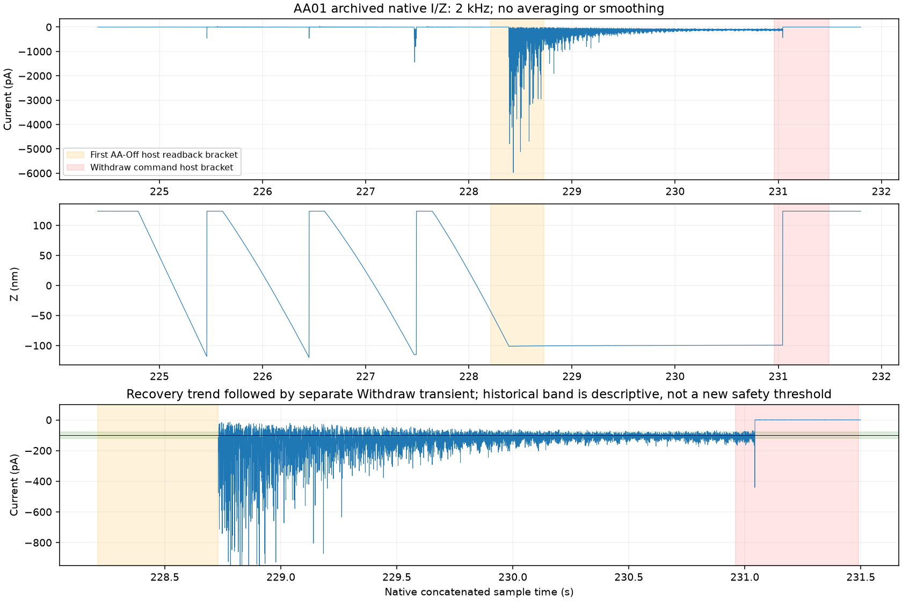
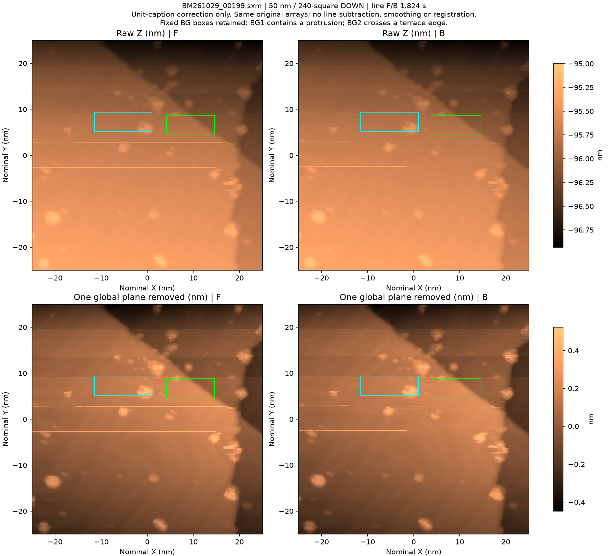
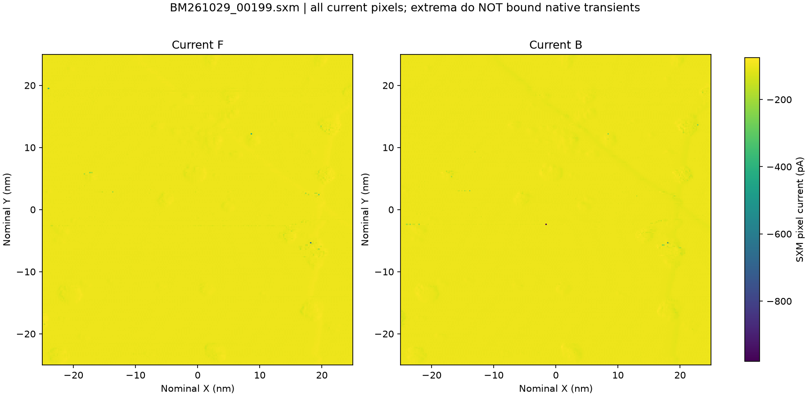
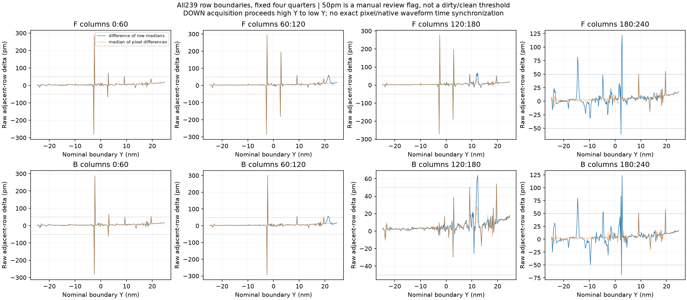
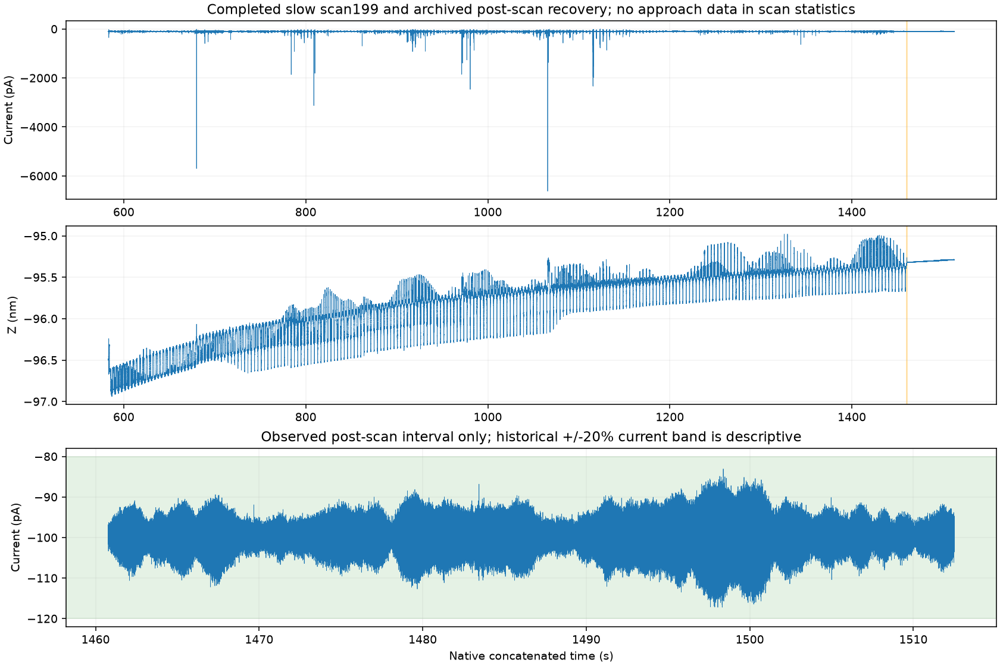
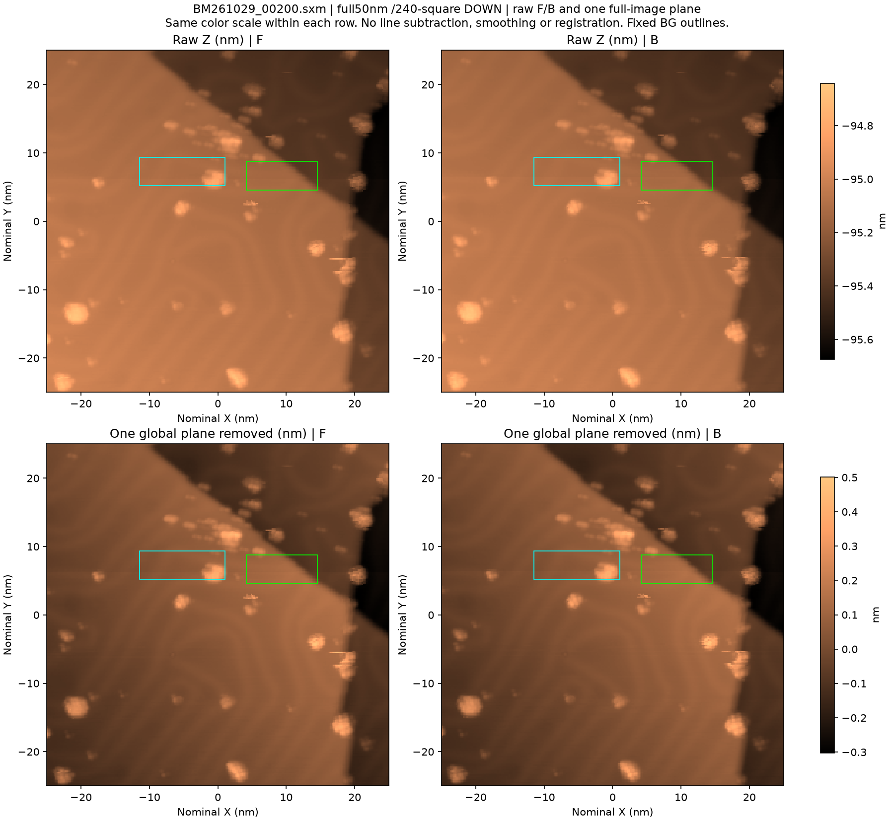
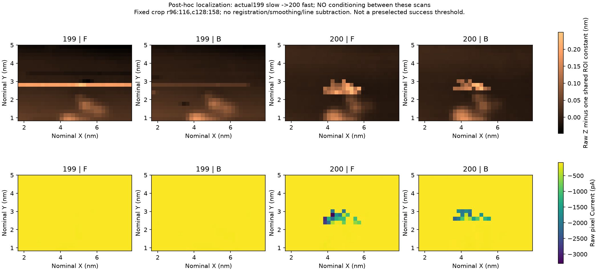
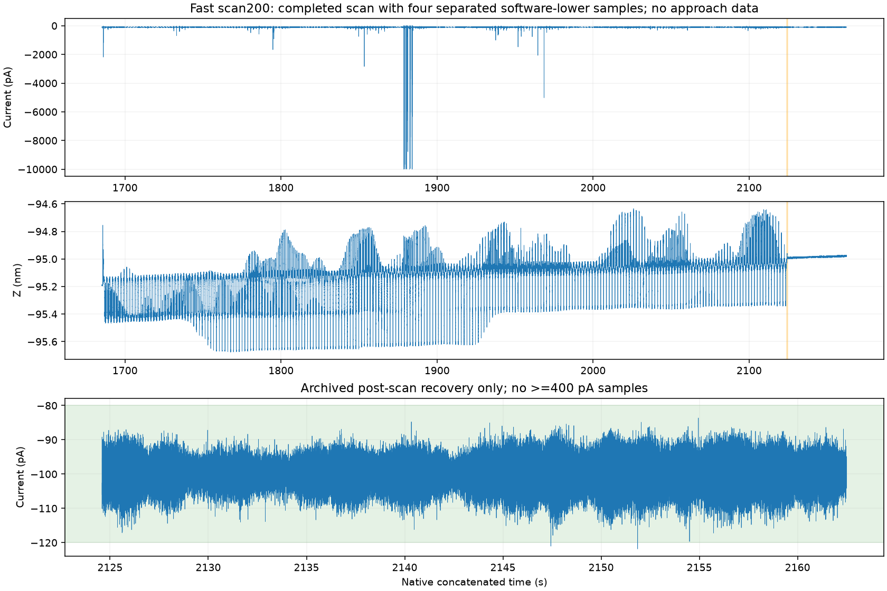
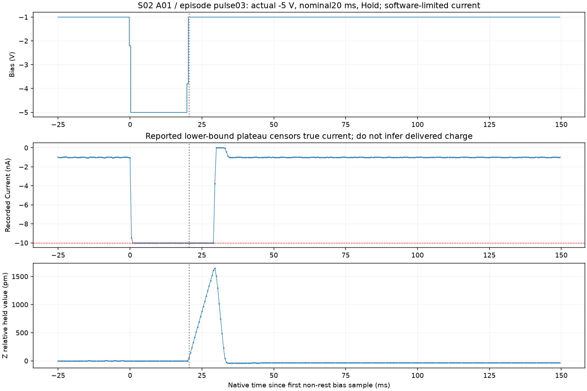
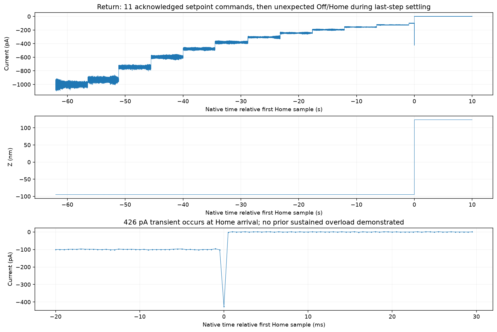

2026-11-02 · 新续实验记录，旧报告保留
用户已授权继续实验并逐步修订Skill。完整慢扫199与无调理快扫200已归档。其后完成准备及一次−5V/20ms/Hold脉冲，但返回100pA第11步settle期间意外Off/Home；原因未明、没有修后完整图，不能计第二次完整流程或修针成功。
证据截面：2026-11-02 20:57:48 CST；只读本地已保存文件，不连接仪器、SMB或GUI。
用户授权与历史记录：先慢扫诊断，再继续其余四轮；每次修前/修后完整图，允许逐步修改Skill。用户确认198后仅有扫描、进退针和移动，未额外pulse/shaper或换针/样。初始快照为Off1/Home、−1V/100pA、SafeTip Off。
198只是历史同几何快扫参照。暂停间隔、人工操作、自动进针与重新接近均是混杂，不能把新慢扫与198直接当紧邻单变量因果对照。当前温度仍无新鲜读数；历史注释温度不补作实测。
旧196—198报告（不改） · 实验员回复联合审查 · Skill step01修改与验证。Skill只修正孤立事件的判断方式，原始量程点和旧严格结果继续保留。
上述慢采样门禁是软件检查，不是高速物理保护。Fine1/AA1失败原记录保留，Fine2稳定只证明本观察窗内隧穿恢复，不证明好针、化学洁净或修针成功。

原始outcome · native复制receipt · 完整SXM · 六平面位验与描述指标 · 独立图像／原生审查。
原始F/B均可辨多个分离的纳米凸起与斜向台阶。F第106行约0.18–0.20nm延伸偏置，B更短／弱；F第132行前三分区约+275–293pm、随后回落，B对应较短段。单个全局平面不会消除这些方向相关线缺陷。背景高度计量受条带和蠕变限制；当前证据不足以把全针标成脏，也未建立无条件全场L3或原子分辨，化学洁净未知。
固定BG1含新凸起及行变化，BG2跨真实台阶，故静背景角色均标N/A。保留原框与原数值，不更换到更平坦区域，不由该指标失败推断全针坏。198跨重新接近与时间间隔，只作历史参照，不能把198→199作为受控减速疗效。



已归档闭块47–121共75块、每通道1875000行，六通道11250000有限值。按主机counter边界保守划定扫描核心：采样最负−6.622586nA（第86块零基第6517行），≥400pA共106点、≥1nA共22点，无相同软件floor样点；最长连续≥400pA为3点。这是实测样本统计，不是真实峰值上限或允许超载时长，不硬对齐具体像素。
扫描后已归档51.73s：I为−117.216至−83.075pA，无≥400pA点，全部落在历史−120..−80pA带内；Z斜率约+0.645pm/s、去线性RMS约1.523pm。本窗口没有展示持续失稳，但扫描中的瞬态依然保留。扫描Z同时含真实空间形貌与反馈响应；各块无逐点硬件时间戳，不宣称严格无隙或主机硬同步。

最大实测电流事件放大图；邻近恢复窗口仍在移动扫描，不能当固定位置恢复实验。
仅恢复每向0.912s；20:23:28.107373 Start → 20:30:46.863458 WaitEnd，实际438.755s。完整50×50nm、240²、DOWN、−1V/100pA；六平面345600值native/TCP/wire位匹配。199→200之间无Pulse或TipShaper。
200的长非局部横线明显减少，多个纳米对象可辨；X≈4.3、Y≈+2.8nm局部锯齿／短线和右边缘X≈18、Y≈−6nm拖尾仍在。raw Z F/B RMSE16.392pm，r=0.994936；像素Current最负F−3.299nA、B−2.275nA。固定BG1/BG2仍因对象／台阶占用标N/A。不同速度与时间顺序同时改变，不能由较小全局RMSE断言快更好、慢必更好或针尖已修复。
完整200SXM · 完整位验／指标 · 完整raw/global-plane Z层（已实际核对：raw与global-plane标题／色条均为nm） · 完整Current层 · 正式独立审查。


正式原生审查为闭块134–173、6000000有限值。保守扫描核心≥400pA共138点、≥1nA共89点；4个分离软件下限点为−9.9994768nA，间隔约1.823、1.824、1.817s，与反复经过局部对象的行周期相容。它们不是连续平台；真实峰值未知，也不硬绑定精确像素。后置37.91s未见≥400pA，末5s全在历史±20%带，I标准差4.502pA、Z斜率0.233pm/s；只支持所观察时窗，不保证长期稳定。

分离事件放大图。
200最初是fast diagnostic/reference；20:36:38 Root在动作前明确选择它作为局部成像质量探索的完整修前基线，冻结主ROI rows99:115/cols132:153和次ROI rows139:168/cols195:219。该选择不把整个针尖或所有纳米功能强标坏。前瞻目标、替代解释和判据 · 历史连续性审查 · 单次动作决定。
准备outcome · 已知脉冲outcome · 原生脉冲审查 · 返回原outcome。
第242块39个完整−5V样点对应19.5ms名义采样占用，含边沿的等效矩形时长20ms；39点记录Z均−94.837389nm，与Hold相容。脉冲附近57个连续软件下限样点（其中偏压已回−1V后18点），记录值−9.9994768nA，真实峰值与完整电荷未知。Hold释放后实测Z最高相对平台+1.650498nm，约在Bias返回后9ms；这是采样到的控制输出变化，不是独立原子间隙测量。

脉冲后0.1–1s原生I全部在准备设流±20%带内；末20–30s I均值−1001.336pA、标准差28.308pA，Z斜率0.206pm/s、去趋势RMS1.336pm。完整前后恢复图同时保留早期瞬态，不能只凭慢读均值证明Z始终稳定。
返回原生第252块零基4118→4119→4120行记录Z−94.739633→−7.363841→+123.69999nm；中断前0.5s电流均值−99.667pA、标准差1.325pA，全在±20%带。约−426.001pA样点与到Home同索引，未见已采过载前驱。单次顺序读回XY曾显示(0,0)，后续独立快照为(−25,−25)nm，不据此宣布持续横移或原生硬同步。
返回原生／7187个请求头审查 · Root中断记录 · 独立新鲜状态 · 现场截图。

R01原生19:55:22→20:51:15，由Root主动结束自有logger并发送唯一DataLog.Stop；不是7200名义时长自然到期。read011/read012相隔5.349s，完整DataLog状态一致：同Start、同Stop、末块269、counter6040。原始终止outcome保留，由独立读回补证；R02尚未启动，没有活跃硬件writer。
全部269块（268×25000＋6040）每通道6706040行，六通道40236240有限值，header0.5ms对应3353.02s。所有源文件双读SHA、本地复读、连续文件编号、末块行数与elapsed/2一致；这不证明模拟波形绝对无隙或真实峰值上限。全记录61个软件下限匹配点与阶段审查4个200点＋57个脉冲点一致，不能把所有高电流阈值计数混作扫描异常。
最终原生审计 · 269块逐文件receipt · Stop/wire独立核对 · read011 · read012。
20:51:29最终读回：Bias−1V、setpoint100pA、I约+0.137pA、Feedback Off/status1、Z Home +123.699991nm、Scan0、SafeTip Off、XY(−25,−25)nm。这是撤回态，不是稳定隧穿；未知退针原因仍待用户历史与进一步证据，归档完成不解除结状态准入。
总体仍1/5完整尝试、成功0、余4；S02已有物理动作照实计数，不把未完成流程藏掉。每次完整修前/修后与成功闭环分开计数，既有每session6次及2次无改善复核规则不重置。
Root完整审阅候选diff后，按已有用户授权安装并同步本地repo，仅改入口、physics与localprotocol三份文档；其余9文件（包括scripts/profile）字节不变，未commit/push。补充I稳定≠Z稳定、速度/时间混杂、占用背景角色N/A、恢复后意外Home独立归因。运行证据只集中localprotocol，本轮无新阈值、硬件指令或成功计数变更。
精确差异 · 安装前后hash、20链接校验 · 三场景独立审阅 · Step02前备份入口 · 仅文档记录模板。原Step01及旧报告、旧practice_log保持历史版本。
机器可读索引保存本截面状态、计数和SHA；后续实际新图到位后另存旧快照再更新本附录。旧报告与旧practice_log保持原样。